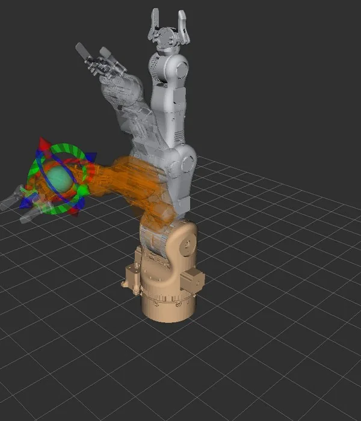
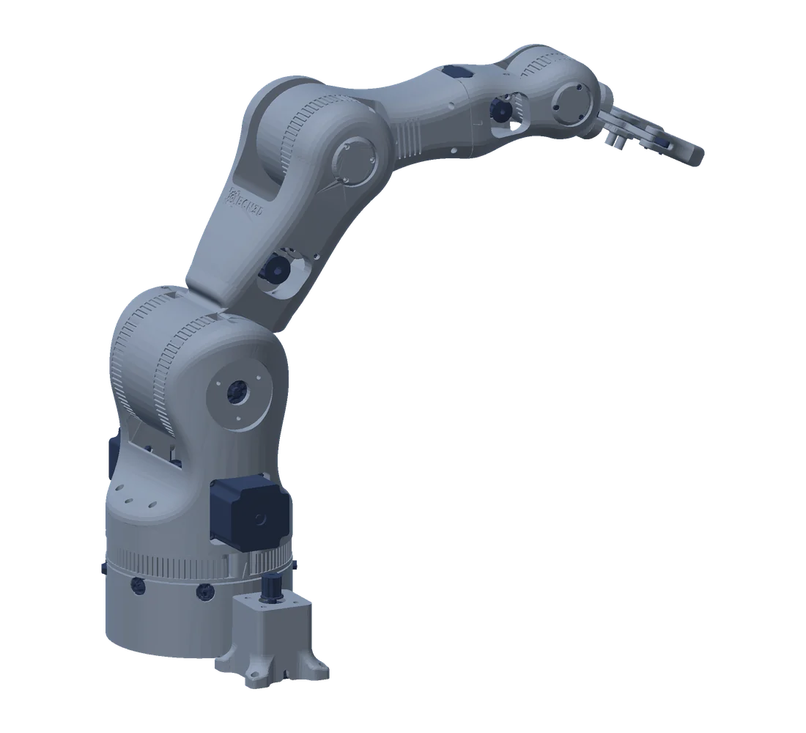
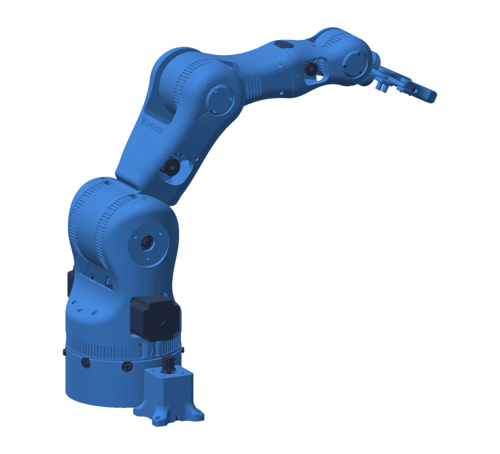
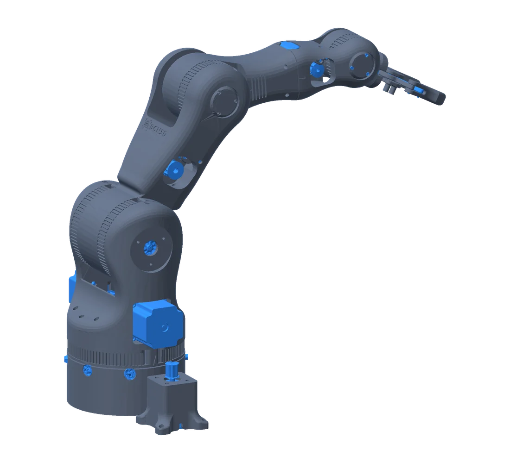
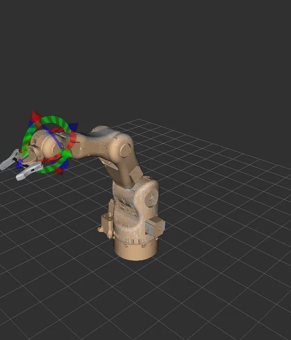

Operator PC
Works todayThe operator's side: choose a goal, preview the motion plan and execute it.
- Motion planning with MoveIt 2
- Visualisation and interaction in RViz2
- ROS 2 communication between machines
SmartManipulator-X is a free kit of three open-source projects: the Operator PC, the Robot PC and the Doppelstep motor drive. Start in simulation on one computer, then move to a real motor and the whole arm, one level at a time. You can stop at any level.

A motion goal travels from the operator's screen to the motor. Each block is its own project with its own documentation.
The arm is the BCN3D Moveo, an open-source robot arm designed to be printed on a desktop 3D printer. Its parts and assembly are public, which makes it a good base for learning: you can see and change every piece.
The robot description the software uses (the URDF) is generated straight from the Moveo CAD files. The arm you plan with in simulation at Level 1 has the same geometry as the printed one at Level 3.
Smart servos with a built-in controller are convenient but expensive. Stepper motors are cheap and strong, but on their own they do not report where they are. The Doppelstep drive closes that gap: it controls the stepper and answers on the bus like a smart servo, so the robot software cannot tell the difference.




The operator's side: choose a goal, preview the motion plan and execute it.
The robot's brain: runs the control stack, in simulation or on a Raspberry Pi CM4.

The motor drive: turns a low-cost stepper into a smart servo the robot already speaks to.
Read these before you open the docs. Each one maps to a part of the kit.
A robot is many small programs, called nodes. ROS 2 lets them exchange messages, on one machine or across the network. That is how the Operator PC and the Robot PC work together.
 MoveIt 2
MoveIt 2
You say where the gripper should go. MoveIt 2 works out the joint angles that get it there and a trajectory that avoids collisions, before anything moves.
Controllers send commands to a hardware interface. At Level 1 that interface is simulated; at Level 3 it is the real bus. Nothing above it changes, so your code moves with you.
All drives share one serial bus. Each has an ID and answers Protocol 2.0 packets. Doppelstep answers like a DYNAMIXEL XM430 servo, so the standard ROBOTIS software drives a stepper motor.
Each level adds hardware, not new software. The code you write at Level 1 runs unchanged at Level 3.
Plan and execute arm motions, write ROS 2 nodes and test algorithms against simulated joints.
Run your trajectories on a real motor and see real timing and limits.
Run your algorithms on the real six-axis arm.

Screenshots from the Operator PC documentation. See the full RViz2 walkthrough ↗
Building the mechanics? These pages cover printing and assembling arms of the same family. They belong to their authors: we link to them and describe them in our own words.
The open-source arm this robot is built on: printable parts, assembly instructions and the CAD files.
By BCN3D Technologies ↗A long step-by-step guide to a large, mostly 3D-printed six-axis arm driven by stepper motors.
Read on Instructables ↗A Moveo-based arm with an added wrist axis, print-friendly parts, Raspberry Pi control and a first MoveIt simulation.
By Maheemal KB ↗Not for Level 1. Everything runs in simulation on one computer with Docker.
Yes. The Robot PC, the Operator PC and the Doppelstep firmware are open source under the Apache License 2.0.
With the connection guide for beginners ↗. It walks you through Level 1 in pictures.
Open an issue in the project's repository on GitHub ↗.
Arm renders and robot description from the BCN3D Moveo CAD (MIT licence). Curious how every layer is engineered? Read the SmartManipulator-X case study.